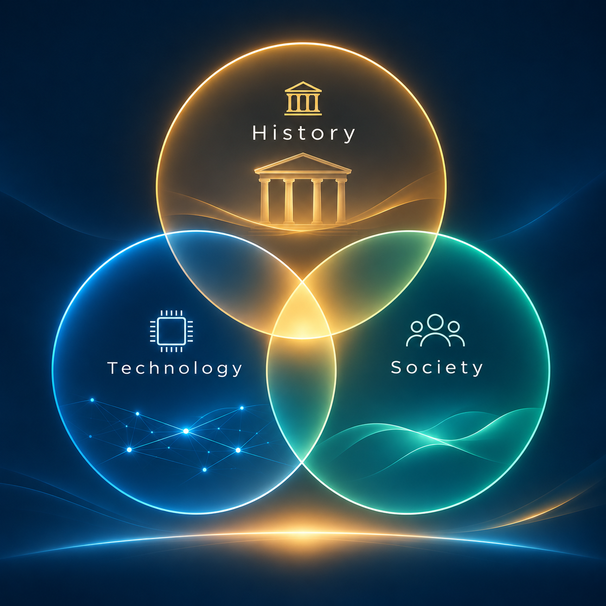

Fragen stellen
Wir möchten Entwicklungen verstehen, Hintergründe erkunden und weiterdenken.
Nova Tempora ist ein Verein für Menschen, die neugierig auf Zusammenhänge sind: zwischen unserer Geschichte, den Technologien von heute und der Gesellschaft von morgen.
Wir interessieren uns für die Kräfte, die unsere Welt geprägt haben – und für jene, die sie verändern werden. Dabei geht es nicht um eine einzige richtige Perspektive, sondern um Fragen, Verbindungen und die Bereitschaft, voneinander zu lernen.
History, Technology und Society bilden dafür drei Zugänge, die sich gegenseitig ergänzen.
Unsere drei Themen entdecken
Nova Tempora soll ein Ort für unterschiedliche Sichtweisen und konstruktive Gespräche sein.
Wir möchten Entwicklungen verstehen, Hintergründe erkunden und weiterdenken.
Unterschiedliche Erfahrungen und Gedanken bereichern das gemeinsame Bild.
Aus respektvollem Austausch können neue Fragen, Einsichten und gemeinsame Ideen entstehen.
Nova Tempora fördert den offenen, interdisziplinären Dialog über Technologie – besonders künstliche Intelligenz und Zukunftstechnologien –, Geschichte, Kultur und gesellschaftliche Entwicklungen.
Vorträge, Podiumsdiskussionen, Treffen und Workshops als Raum für gemeinsames Lernen und kritische Reflexion.
Arbeitsgruppen, Veröffentlichungen, Experimente und digitale oder technische Projekte anstossen.
Mit Interessierten, Fachpersonen, Unternehmen, Hochschulen, Kulturinstitutionen und weiteren Organisationen kooperieren.
Diese Tätigkeiten beschreiben die Möglichkeiten gemäss Statuten; sie sind nicht alle bereits als Veranstaltungen angekündigt.
Nova Tempora wird im Co-Präsidium von Dorian Voegeli und Admir Berisha geleitet. Gemeinsam setzen sie sich für den Aufbau des Vereins und den Austausch zwischen Geschichte, Technologie und Gesellschaft ein.
Du möchtest Wissen teilen, neue Perspektiven kennenlernen und dich mit Interessierten aus Geschichte, Technologie und Gesellschaft vernetzen? Bei Nova Tempora sind Menschen und Organisationen willkommen, die unseren Vereinszweck unterstützen.
Gemäss Art. 5 unserer Statuten können natürliche und juristische Personen die Mitgliedschaft in Textform beantragen. Über die Aufnahme entscheidet der Vorstand; die Mitgliedschaft beginnt mit der Aufnahmebestätigung.
Die Mitgliedschaft ist derzeit kostenlos. Wer den Aufbau des Vereins unterstützen möchte, kann freiwillig einen Förderbeitrag leisten. Die Vereinsversammlung ist gemäss Art. 9 der Statuten für die Festlegung der Mitgliederbeiträge zuständig.
Die Mitgliedschaft ist derzeit kostenlos (CHF 0.–). Wer unsere Arbeit und den Aufbau der Community unterstützen möchte, kann freiwillig einen Förderbeitrag leisten. CHF 20.– pro Jahr sind ein unverbindlicher Orientierungsbetrag. Es gibt keinen Mindestbetrag und keine Zahlungspflicht. Mitgliedschaft und Stimmrechte sind unabhängig von freiwilligen Beiträgen.
Bankverbindung folgt in Kürze.
Post für den Verein Nova Tempora kannst du an unser Vereinsdomizil senden. Für Fragen und Anfragen erreichst du uns auch bequem über das Kontaktformular.
Nova Tempora wurde am 20. November 2026 gegründet. Die Statuten wurden an diesem Tag angenommen und unterzeichnet. Der Verein hat seinen Sitz in Bern und ist gemäss Art. 60 ff. ZGB organisiert.
Die Statuten enthalten unter anderem unseren Zweck, die Regeln zur Mitgliedschaft, die Zuständigkeiten der Vereinsversammlung und die Organisation des Vorstands.
„Understanding the past.
Exploring the future.“
Wir möchten Zusammenhänge sichtbar machen, Menschen vernetzen und den Blick für neue Möglichkeiten öffnen.